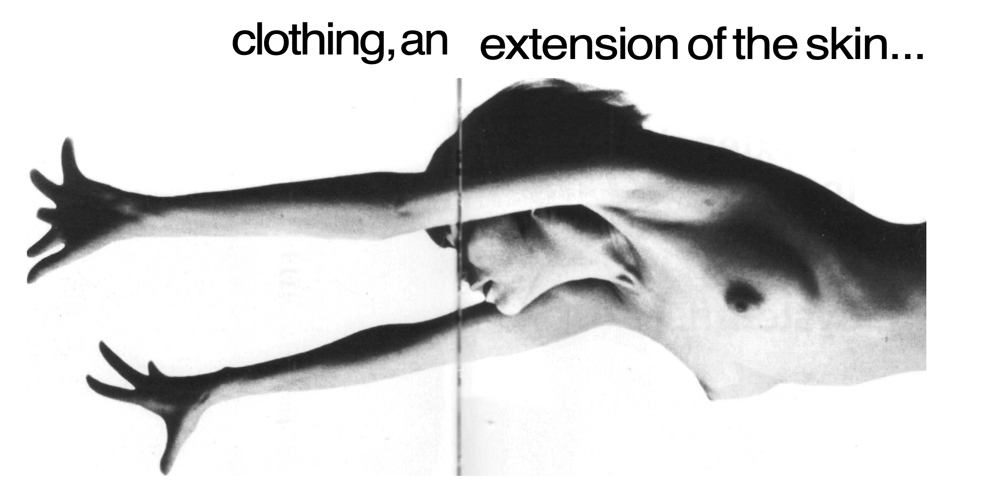

This is a website where you can add/delete what you got out of the reading "The medium is message" to the list.

The way we send and receive information is sometimes more important than the information.
In mordern days, the mediums would be social media platforms like twitter, facebook, iMessages, etc.
Mediums have changed the ways we behave. Memory spans have been reduced a lot from digital techonology. For example, normal conversations have been replacd with emojis.
"Television demands participation and involvement in depth of the whole being. It will not work as a background." - which changes how we behave.
The text got me really confusing at first. It had a variety of distinct images, which help picture what Marshall McLuhan describes.
Everything is changing—you, your family, your
neighborhood, your education, your job, your government, your relation to "the others." And they're
changing dramatically.